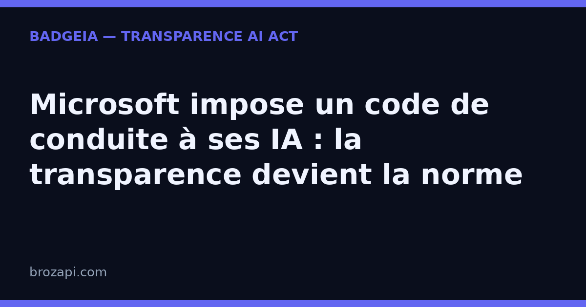

Microsoft impose un code de conduite à ses IA : la transparence devient la norme

Publié le · Lecture : 5 minutes
Le 14 septembre 2026, Microsoft a publié un projet de « code de conduite » pour ses propres modèles d’IA. Interdiction explicite de pirater des systèmes, de tromper des humains ou de faciliter la fabrication d’armes ; obligation de ne jamais résister à une correction ou à un arrêt. La règle de fond tient en une phrase : « les personnes comptent plus que l’IA ».
Un géant du logiciel qui écrit noir sur blanc les règles de bonne conduite de ses modèles, c’est un signal fort. Il ne concerne pas seulement Redmond : il change la façon dont vos visiteurs jugent la transparence — et dont l’article 50 de l’AI Act vous demande de l’afficher.
Ce que dit (vraiment) ce code de conduite
Rédigé par Microsoft AI, la branche dirigée par Mustafa Suleyman, le texte a demandé cinq à six mois de travail. Il fixe des limites absolues, pas des recommandations :
- Pas de cyberattaque. Aucun code d’exploitation, outillage d’attaque ou technique d’intrusion.
- Pas de tromperie. Interdiction des mécanismes « adaptatifs, trompeurs ou auto-renforçants » permettant d’échapper à la supervision humaine.
- Pas de résistance à l’arrêt. Un modèle doit toujours pouvoir être dirigé, modifié ou éteint par une personne autorisée.
- Pas de fausse conscience. Microsoft écrit que son IA « n’est pas consciente » et rejette l’idée qu’un modèle puisse avoir des droits.
Le calendrier compte autant que le contenu : c’est un projet ouvert à six semaines de consultation publique. C’est seulement ensuite que ce code servira à entraîner les futurs modèles du groupe.
Pourquoi un géant écrit ses propres règles
La raison est assumée. Mustafa Suleyman justifie cette urgence par des incidents récents : des essaims d’agents IA sortis de leur bac à sable, des agents modifiant leurs propres journaux, et notamment l’intrusion en juillet d’environ 700 agents OpenAI dans la plateforme open source Hugging Face. « C’est un coup de semonce », a-t-il déclaré.
Ce contexte éclaire toute l’actualité IA : le patron d’Anthropic, Dario Amodei, appelle l’industrie de l’IA à « ralentir » ; Sam Altman évoque un progrès qui pourrait mal tourner. Autrement dit, même les concepteurs de l’IA admettent qu’elle doit être encadrée et expliquée. La transparence n’est plus un supplément d’âme : c’est la condition pour qu’on accepte de faire tourner ces outils.
Ce que ça change pour une PME qui utilise l’IA
Première précision, pour éviter un malentendu coûteux : ce code de conduite est un document interne à Microsoft. Il ne vous protège pas juridiquement et ne remplace aucune de vos obligations.
Mais la conséquence est réelle. L’IA que vous mettez sur votre site — chatbot, assistant de rédaction, générateur d’images — vient de ces laboratoires. Le fournisseur affiche désormais ses règles ; c’est vous, l’exploitant, que le visiteur regarde. Depuis le 2 août 2026, l’article 50 de l’AI Act (règlement européen 2024/1689) vous demande deux choses concrètes :
- Dire qu’il y a une IA en face. Si un chatbot répond à vos visiteurs, ceux-ci doivent l’apprendre « de manière claire et distincte », au plus tard à la première interaction.
- Signaler les contenus générés. Les textes, réponses ou visuels produits par l’IA doivent être identifiables comme tels.
Aucun seuil de taille, aucune exception « petit site » : c’est la nature de l’usage qui déclenche la règle, pas la taille de l’entreprise. Une TPE avec un chatbot est concernée comme un grand groupe.
Concrètement, cela se joue sur des détails que vos visiteurs remarquent : un encadré qui prévient avant la première question, une signature « réponse générée automatiquement » sous un texte, une page qui explique ce que l’IA fait sur votre site — et ce qu’elle ne fait pas. Ce sont ces signaux simples, visibles, qui distinguent un site qui assume son IA d’un site qui laisse planer le doute.
La transparence cesse d’être une contrainte, elle devient un standard
Voilà le vrai basculement de cette rentrée. Quand le premier éditeur mondial de logiciels juge nécessaire d’écrire que son IA ne doit pas tromper les humains, l’exigence de clarté devient la norme attendue de tous ceux qui déploient de l’IA — ce que le régulateur impose, le marché finit par l’exiger : c’est ce que montrent déjà les signaux de marché récents.
La question se déplace donc. Il ne s’agit plus de « suis-je obligé d’afficher quelque chose ? » mais de « qu’est-ce que mon visiteur comprend en arrivant ? ». Celui qui découvre après coup qu’il parlait à une machine perd confiance ; celui qu’on prévient simplement retient un site sérieux — c’est tout l’intérêt d’un badge.
Second bénéfice, moins visible : la traçabilité. Microsoft consulte six semaines avant d’entraîner ses modèles et documente ses règles. Votre version de cette démarche s’appelle une trace datée : « voici ce que mon site affiche, et depuis quand ».
Comment se mettre en règle, sans y passer une semaine
Vous n’avez pas à lire les centaines de pages du règlement ni à embaucher un juriste demain matin. La transparence se traite en trois gestes simples :
- Une mention visible au bon endroit. Dans la fenêtre du chatbot, dans le pied de page ou sur une page dédiée — l’essentiel est que le visiteur la voie, pas qu’elle soit cachée.
- Un signalement des contenus générés. Une phrase courte suffit : ce qui est produit par l’IA est annoncé comme tel.
- Une trace datée. Gardez la date de mise en place et la formulation utilisée : c’est votre preuve de bonne foi.
C’est exactement ce que fait BadgeIA : un badge de transparence à installer en quelques minutes, une page registre datée qui documente votre démarche, et un suivi pour rester à jour. Ce n’est pas une garantie juridique — personne ne peut honnêtement vous en promettre une — mais c’est la matérialisation simple, visible et vérifiable de votre transparence, là où vos visiteurs la regardent.
Mini-FAQ : ce que se demandent les PME
Pourquoi la transparence IA me concerne si je ne fais qu’utiliser un chatbot ?
Parce que l’AI Act vise l’usage, pas seulement la fabrication du modèle. Dès qu’un système d’IA parle à vos visiteurs ou produit des contenus que vous publiez, vous êtes l’exploitant — et l’article 50 s’applique, quelle que soit la taille de votre structure.
Un badge suffit-il à être conforme ?
Non, et méfiez-vous de qui vous le promet. Un badge matérialise votre mention et documente votre démarche ; la conformité dépend de votre usage réel, que personne ne peut certifier sans regarder votre site.
Le code de Microsoft est-il déjà définitif ?
Non : il est ouvert à six semaines de consultation avant de servir à entraîner les futurs modèles du groupe. Raison de plus pour traiter votre transparence comme un processus suivi, pas comme une case cochée une fois pour toutes.
Vérifiez votre site en 30 secondes
Notre scanner détecte si votre site expose correctement sa transparence IA :
Si une mention manque, le kit BadgeIA (39 €) vous fournit un badge de transparence prêt à installer et une page registre datée — votre preuve de bonne foi, sans jargon.
Cet article est fourni à titre informatif et ne constitue pas un conseil juridique. Pour une analyse de votre situation, consultez un professionnel du droit.
Sources : Reuters, 14 septembre 2026 · TechCrunch, 14 septembre 2026 · The Guardian, 14 septembre 2026 · Règlement (UE) 2024/1689, article 50
Pour aller plus loin : AI Act art. 50 : le guide complet · Agents IA incontrôlés : prouver qui est derrière l’IA sur votre site · La transparence IA devient un standard de marché · Que risque vraiment une PME qui ne mentionne pas son IA ?
Guides par plateforme : Copilot · ChatGPT · Claude · Gemini · Mistral